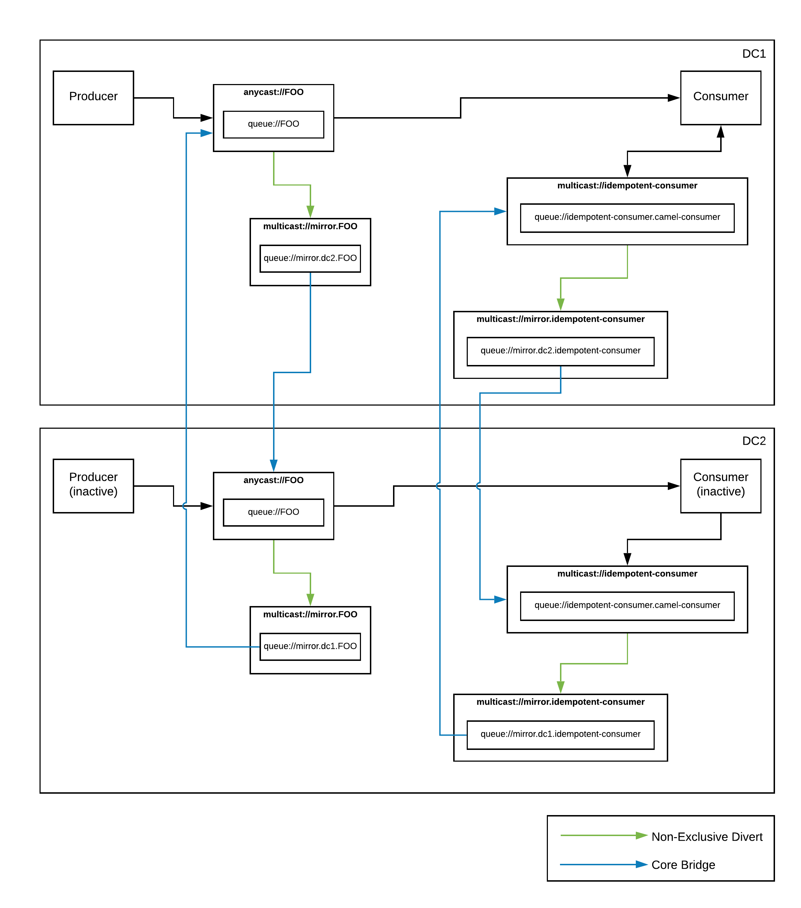

Dropping Dups With Camel
In my last post, I talked about a couple of strategies for setting up disaster recovery for Apache Artemis brokers. In hindsight though, I thought that the subject of the Idempotent Camel Consumer could have used a little more discussion.
In that blog post, I mirrored data between two Artemis brokers using diverts and bridges, and then used an idempotent Camel consumer to prevent duplicate processing. In the code example I provided, I had configured the Camel consumer to use a relational DB as its IdempotentRepository implementation. Specifically, it was this part of the diagram that we’re talking about:
The feedback I got was that people didn’t want to involve yet another component such as a relational DB into their messaging architecture. But the choice of a DB was really just an implementation detail. And not a terribly important detail at that. In fact, I mentioned that there were several other available implementations that could be swapped in with no change to the architecture or code. Just a simple modification of the bean wiring.
It even gives me the option to plug in whatever idempotent repository implementation I’d like. There are several to choose from.
So lets talk a little bit about the different available options, and how this all works in general. At the time of this writing, there are well over 10 available options. Unfortunately, not all of which are listed on the main EIP documentation page. No matter which one you choose, the behavior is the same. When a message is passing through your route, its key is checked against the messageIdRepository that you’ve configured. You get to pick what the key is. Technically, the interface allows for any object to be used as a key, but all of the implementations I’m aware of use a String. Which is the most common choice anyways… If that key already exists, the message is skipped (or optionally processed, but marked with a “CamelDuplicateMessage” header). If the key did not exist, the message will be processed and its key added to the repository so that, next time, it will be skipped (or marked). Of course there’s a bit more to it with exception handling and all, but the end result is that you never process the same message more than once. No matter how many times it is sent to you. This is a super important, but often overlooked feature that most clients really should implement. It’s currently the best solution that we have to the two generals problem in computer science.
Some of the implementations are persistent (ie, FileIdempotentRepository, JdbcIdempotentRepository, KafkaIdempotentRepository, …). Some are not (ie, MemoryIdempotentRepository). Some give you the option (ie, InfinispanIdempotentRepository, HazelcastIdempotentRepository, …). You can pick the right one based on your requirements for speed vs ability to recover in the case of an application restart.
Now that we’ve covered the basics, let’s get back to the original Artemis DR use case… Given that we wanted persistence, but no additional components (ie, DBs, data grids, …), my suggestion was the simple FileIdempotentRepository. It basically just uses a flat file to store key entries. Each entry being a single line within the file. So no extra components required. Just a filesystem. Which I’m going to go ahead and guess that you already had. Unfortunately, upon further inspection of the code, I saw some possible issues that might arise.
First, it looks like it does handle concurrency, but only within a single JVM. While this is not an issue for the specific case we’re talking about (because each JVM would have its own store), it might be something to consider for others. The bigger issue though, is around performance. During normal operation, when a key is added to the FileIdempotentRepository the implementation will add it to an internal cache, and then append it to the persistent file store. If the application restarts, it will load its cache from that persistent file, and then business as usual. However, once the store reaches capacity, it will add to its internal cache, and then re-write the whole cache to the file store (squashing the previous file and its entries). So what you will see is that performance seems great until you hit your max file store size. Then it will tank (depending, of course, on how many entries you keep)… Not ideal.
At this point, I could just recommend that you use one of the data grid/cache based implementations (of which there are several). They will all handle concurrency, can do persistence, and will perform great. But I’m stuck at home, and had a bit of free time. So I figured, why not crank out a new, improved file based implementation?
I call my implementation the DirectoryIdempotentRepository. Basically, instead of writing a single file of idempotent keys, I just use atomic file operations to write keys as individual files within a directory. That way, I don’t have to worry about concurrent access (even across JVMs) as every operation is atomic. And no need to worry about file-locking since each piece of data is represented as a separate file. Furthermore, I got rid of the internal cache since I can just do a Files.exists(Path path, LinkOption... options) to see if my repo contains a key. Neat! Here’s a link to the full source: https://github.com/joshdreagan/camel-directory-idrepo.
So now I have a fast, concurrency safe, simple implementation that requires no extra components. Just a filesystem. I still have to synchronize it between DCs though. But that can be done using the built-in mechanism that my filesystem provides (like Ceph or Gluster replication), or by using a “decorator” implementation that publishes the repository commands to a mirrored topic like I did in my previous post.
This all got me thinking though… It’d be really nice if I could just use some native feature of Artemis to persist my idempotent repository. Then, I wouldn’t have to include any extra components, and I wouldn’t have to worry about synchronizing my data across DCs. All data (messages and idempotent keys) would be handled via a single persistence mechanism, and all replication would use the same divert/bridge features and follow the same pattern as my normal message queues.
The problem is that, with a typical queue, messages are only removed via expiration or consumption. And, in the case of consumption, they can only be consumed once. That doesn’t really fit our requirements. But what about topics? Well, with a typical topic, messages can indeed be consumed by multiple consumers. But only if those consumers are active when the message was produced, or if they registered as a durable subscriber before the message was produced. And only once for each consumer. So that’s no good either. Ideally, we want a bounded fifo queue (so it won’t grow endlessly) that supports message expiry (so we can discard old messages), and lets multiple consumers read through both existing messages as well as receive new messages. Luckily, Artemis has a few tricks up its sleeve.
There’s a really cool new feature called a “ring queue”. It operates just like a bounded fifo queue. You set a maximum size, and it will continue to append messages as they are received. Once it reaches its bound, it will keep accepting new messages, dropping off the oldest ones to make room. And like all destination types, it supports message expiry. So that gets us part of the way there. But if you consume a message from a ring queue, it’s gone. And no one else will get it. So that doesn’t really do us much good if we’re trying to use it for persistence. That is, if our application comes back online and tries to rebuild its state, our messages will have already been consumed and we will have no data.
There is another feature, however, that was intended to be used with “last value queues”. It’s called the “non-destructive consumer”. Basically, it allows a consumer to consume a message from a queue, without Artemis removing said message. So that means that, if I have multiple consumers, they will all receive a copy of every message. If they restart, they will again receive a copy of every message (starting from the beginning of the queue). Perfect!
So now we have everything we need to build an IdempotentRepository implementation that uses an Artemis ring queue as its persistence mechanism. On startup, we can read through the messages on the queue (in a non-destructive manner) and build an internal cache of keys. As new keys are added, we can simply update our internal cache, and publish a command message to the queue. If we restart, all of our data will still be there and we can rebuild the cache by simply re-reading through the queue. In addition, any additional applications or instances will receive the same data both at startup, and as they are added. And that’s exactly what I did… Take a look at the source if you want to see how it all works: https://github.com/joshdreagan/camel-artemis-idrepo.
But how does this help me really? Well, now I have an IdempotentRepository implementation based entirely on Artemis for persistence. No external components required. Also, since my keys are being stored on an Artemis topic, I can simplify my previous DR architecture and remove the extra decorator I had created to publish and replicate my repository command messages to an Artemis topic, as well as the piece that processed said command messages. In the end, my simplified architecture looks like this:

Much better! :)
Dropping Dups With Camel
https://blog.joshdreagan.com/2020/03/20/dropping_dups_with_camel/